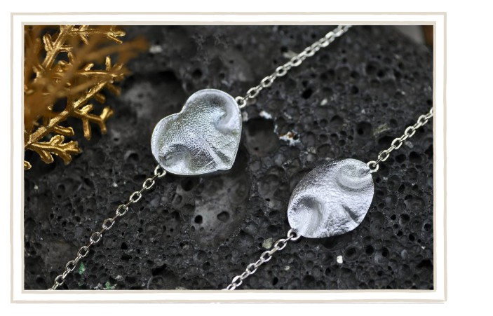
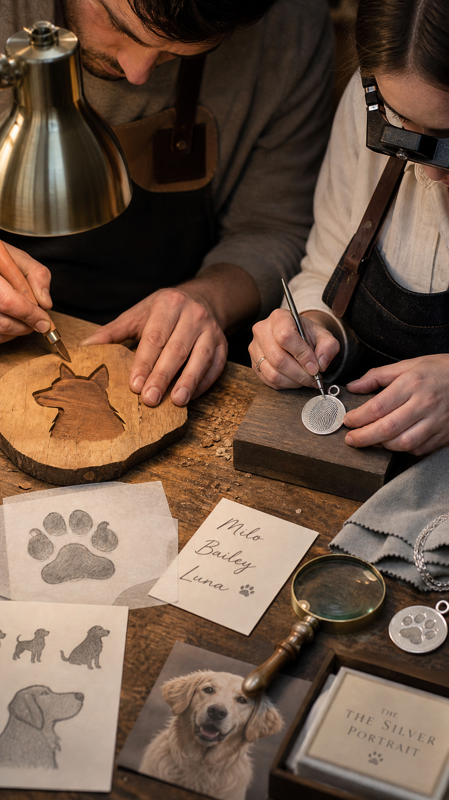
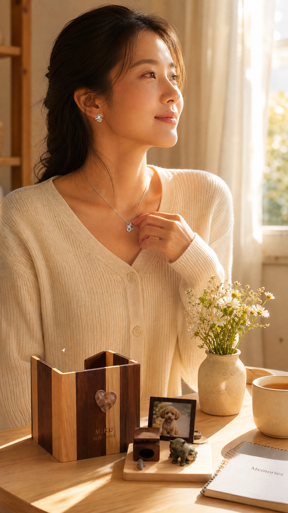
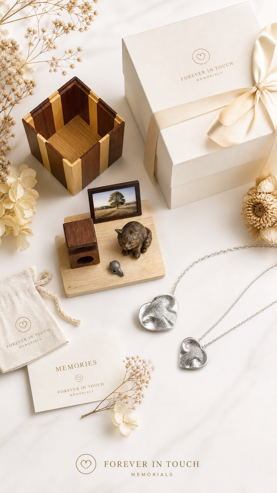

把想念留在身邊
將牠的紋印或掌印化作可以隨身佩戴的飾物，在忙碌的日子裡，仍能輕輕碰到那份熟悉。
Your last greatest love to show
牠曾經佔據你每一個平凡的日常。
在想念很重、也不知從何說起的時候，
願你先被理解，再慢慢找到往前走的方向。
你可以先和 AI 說說此刻的心情，或為毛孩留下一張回憶卡。
不急著做任何決定，先讓自己被陪著。
情緒支持
一步一步嚟就好，你不需要一次過想清楚所有事。
難過、慌亂、捨不得，都是因為你很愛牠。這些感受不需要被急著解決，先讓自己好好停一停。
當心情稍為安定，才慢慢想接下來的安排。一件一件來，你不必在最亂的時候做完所有決定。
把想念好好安放，為牠在家中、在心裡留一個溫柔的位置，讓這份愛可以繼續陪著你。
除了被聆聽，你也可以在這裡，為毛孩點一盞燭光、做一張回憶卡，為想念留一個安放的位置。
點一盞燭光
寫下一句想對牠說的話，亮起一盞屬於你們的燭光。
你並不孤單——每一盞燭光，都是一位和你一樣深愛毛孩的人，靜靜點亮的。
毛孩回憶卡
上載一張相片，寫下名字與幾句回憶，即時生成一張溫柔的紀念卡。相片只會在你的裝置上處理，不會上傳。
在這裡寫下最想記住的回憶…
紀念產品
當說再見很難，有些人會選擇用一件小物，把愛留在日常。

將牠的紋印或掌印化作可以隨身佩戴的飾物，在忙碌的日子裡，仍能輕輕碰到那份熟悉。

每一件都由人手慢慢雕琢，把牠的樣子與名字，用時間和心意好好地保存下來。

一個安放照片與飾物的角落，讓牠仍然是家的一部分，陪你度過每一個安靜的早晨。
火化服務
失去摯愛的寵物，是我們人生中最深刻的痛之一。牠們不只是陪伴，更是家人，是毛茸茸的無條件愛。此刻的傷痛或許讓你喘不過氣——請允許自己悲傷，也在需要的時候依靠懂你的人。
在 Resoul，我們 24/7 為你提供溫柔而有尊嚴的服務：即時接送、細心處理、個性化私人家火化、專屬骨灰罈與紀念品、寧靜的告別儀式，以及環保選項——一切都按照你的心願，給予你最愛的毛孩最溫柔的道別。
在香港心臟地帶，Resoul 提供保證海景紀念室——一個寧靜、私密的空間，讓遼闊大海與金色日落成為你道別的溫柔背景。
當太陽沉入島嶼後方，天空染上暖色調，柔和光線灑滿房間，海浪低語安寧，每一刻都充滿平寧。在此，道別化為美好轉換：從旅程，到告別，再到永恆珍藏的回憶。
你最偉大的愛，值得這片風景、這份寧靜、這份永遠。
我們隨時在這裡。致電 +852 6476 2951 或
查看Resoul官方資料 →愛心承諾
一爐一寵，永遠如此。我們認為每一個靈魂都值得尊重與獨享的空間，因此從未提供集體火化服務。我們承諾為您的寶貝點燃只屬於牠的火光，確保牠能在我們的陪伴下舒適溫暖地完成這趟旅程。
每一步，我們都會追蹤、拍照、錄影，並為每一位客人提供 24 小時的專屬雲端檔案夾，讓您寶貝的旅程——從抵達到完結——完全公開、透明、清晰。對您而言，這不是程序，而是永遠的放心，一絲混淆也不允許。
我們承諾與守護小動物的人並肩同行。每一次服務，我們都會資助動物慈善團體，為流浪動物提供有尊嚴的火化服務。讓我們一起將愛延續——讓您的寶貝以這趟旅程照亮另一個小生命的旅途，把離別變成永恆的擁抱。
常見心情
可以先停下來，讓自己呼吸一下，寫低此刻最掛念的一句話，再慢慢整理告別與紀念安排。你不需要一次過想清楚所有事。
眼淚是想念的一種語言，並不代表你軟弱。哭得出來，其實是給自己一個釋放的出口，慢慢來，不用急著好起來。
很多主人都會這樣想。也許可以先記得，你當時是在有限資訊下盡力作決定；這份心疼，正說明你有多在乎牠。
麻木也是哀傷的一部分，有時心會先替你按下暫停。給自己多一點時間，感覺會慢慢回來，你並沒有做錯甚麼。
這些細微的記憶，正正說明你們有多親近。可以保留一兩件牠的物件，需要時輕輕拿出來，讓想念有一個安放的位置。
這些時刻特別重，是很正常的。你可以為自己預備一個溫柔的方式去記住牠，例如點一支蠟燭、寫下幾句話，慢慢陪自己走過。
它讓主人在日常中保留一個溫柔的位置，安放照片、飾物與那些仍然重要的回憶，讓想念有地方可以停靠。
這個決定沒有時間表，也沒有對錯。等你準備好再慢慢考慮；新的陪伴不會取代牠，只是另一段故事的開始。
可以用簡單、誠實的說話，容許他們難過和發問。一起記住毛孩開心的時刻，會幫大家慢慢接受這件事。
尋求專業幫助不代表你「有問題」，而是願意好好照顧自己；就像我們會帶毛孩看獸醫，我們自己有時也需要專業支援。如果難過持續很久、影響到日常生活，可以聯絡香港心理衞生會（2528 0196）或撒瑪利亞會 24 小時熱線（2389 2222）。
它可以陪你整理失落、想念與下一步方向，讓沉重的心情先有一個被承接的位置。它不是醫療或心理診斷，若情緒持續低落，仍建議尋求專業協助。
如果你覺得撐不住
哀傷有時會很重。如果這種難受持續影響到生活，找人傾訴或尋求專業支援，都是好好照顧自己的方式。以下是一些你可以聯絡的地方。
若情況緊急、或有傷害自己的念頭，請即時致電撒瑪利亞會 24 小時熱線 2389 2222，或緊急致電 999。
同路人留言板
珍惜每段故事，溫暖每顆心。你可以留下一句想念、一張相片，也可以靜靜讀別人的故事——在這條路上，你並不孤單。
＊ 目前留言會保存在你的裝置上（示範版）。日後接上帳戶與雲端後，就能與所有同路人共享、永久保存。
關於 Resoul
Resoul 是香港的寵物善終品牌。我們的團隊由具備獸醫護理背景的人員與資深善終顧問組成，明白這份失去有多痛，也明白牠對你有多重要。
恆溫專車、遺體潔淨、海景告別室，如接送家人般溫柔護送。
堅持獨立火化、一對一編號追蹤，骨灰 100% 屬於你的毛孩。
不催促、不硬銷，只提供一個安靜、被理解的空間。

在想念很重的時候，願你能慢慢找到被陪伴的感覺，也為毛孩留下溫柔而體面的紀念。
在 Resoul，離別不是終點，而是永恆的致敬——是對那些歡笑、陪伴與無私之愛的溫柔延續。
願你想起牠時，心底先泛起微笑，才落下淚水。
屬於你們的緣份，永遠都在。
當你準備好，再慢慢了解下一步。
查看Resoul官方資料 →